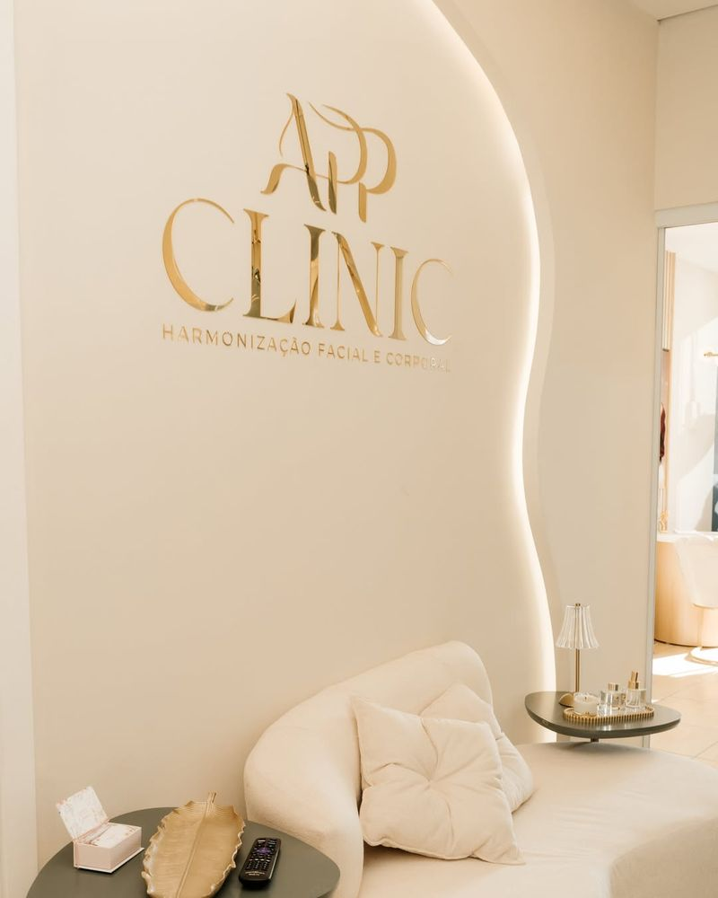
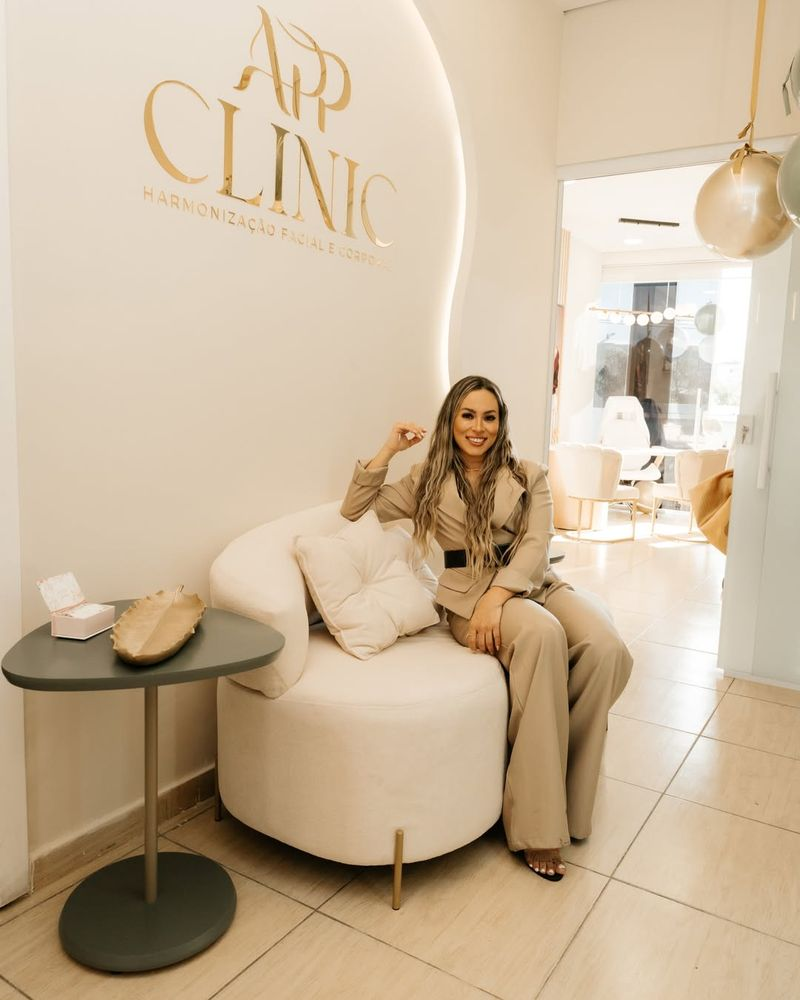
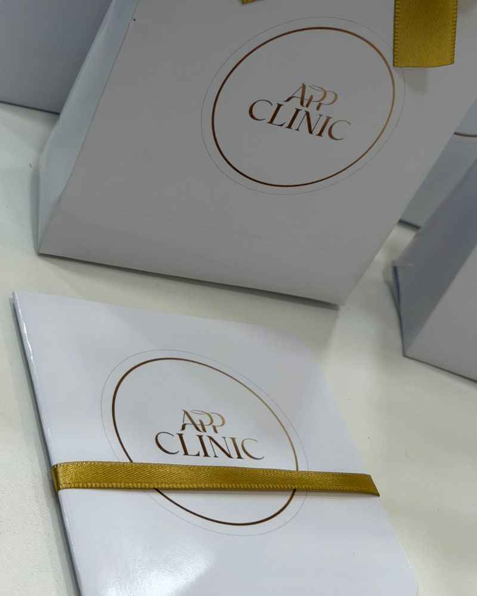

Antes e depois
Resultados reais ajudam a entender o que um tratamento pode oferecer, desde que sejam apresentados com honestidade. Por isso seguimos critérios claros para cada caso publicado.

Como os casos são apresentados
Publicamos apenas fotos da mesma pessoa, antes e depois do tratamento, com autorização por escrito para uso neste site. A autorização para o Instagram não vale, por si só, para cá.
As fotos de cada par são feitas com enquadramento, distância e iluminação comparáveis, e não recebem edição que altere pele, medidas ou contornos.
Cada caso traz as informações necessárias para ser compreendido. Resultados variam de pessoa para pessoa, e a indicação de qualquer procedimento depende de avaliação individual.
Em cada caso, você encontra
- Procedimento realizado
- Região tratada
- Intervalo entre as fotografias
- Número de sessões
- Contexto necessário para entender o resultado
Casos em revisão
Estamos reunindo as autorizações e as informações de cada caso. Assim que estiverem completos, eles aparecerão aqui, lado a lado, com as etiquetas “Antes” e “Depois”.
Conheça a APP Clinic
O ambiente da unidade de Interlagos, onde a avaliação acontece.



Vamos conversar sobre o que você deseja?
A avaliação é o primeiro passo para qualquer procedimento, nas duas unidades.